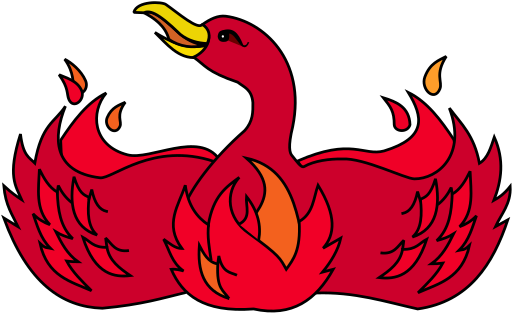

Firefox

Vad är Mozilla Firefox?
Mozilla Firefox (eller bara Firefox förkortat Fx eller fx) är en fri webbläsare som baseras på öppen källkod
och finns till många operativsystem. Moderna versioner av programmet är utvecklade för Android,
GNU/Linux, macOS samt Windows, och Firefox 57.0 har full översättning på 95 språk (november 2017).
Historik
Firefox är en avknoppning av Mozilla som i sin tur var en fortsättning på Netscape Navigator. Syftet med avknoppningen
var att man ville gå från den monolitiska uppbyggnaden som Mozilla utgjorde. Istället splittrade man detta allt-i-allo-program
i separata program. Då uppstod Firefox, e-post-klienten Mozilla Thunderbird, IRC-klienten ChatZilla och kalenderapplikationen
SunBird. Firefox 1.5 släpptes den 29 november 2005 och laddades ned i över två miljoner exemplar redan det första dygnet.
Serien dessförinnan, version 1.0.x, passerade den 20 oktober 2005 100 miljoner nedladdningar, vilket gör det till ett av de mest
spridda programmen byggt på öppen källkod någonsin.[källa behövs] Mozilla Firefox 2.0 släpptes den 24 oktober 2006.
Firefox 3.0 släpptes den 17 juni 2008, dagen som Mozilla kallade Download Day. Syftet var att göra Firefox 3.0 till den mest
nedladdade programvaran under 24 timmar någonsin. Resultatet blev över 8 miljoner nedladdningar.[6] Den 30 juni 2009 släpptes
Firefox 3.5 och i samband med detta uppdaterades den officiella Firefox-logotypen.
Hur loggorna har ändrats



Hem
Denna sidan är kopierad av Tove Vilson. 07-09-2020.